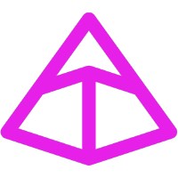

Linux kernel
El kernel de Linux es el núcleo de cualquier sistema operativo Linux. Gestiona el hardware, los recursos del sistema y provee de los servicios fundamentales para todos los software.
Ver repositorioGraduado en ingeniería informática por la Universidad Autónoma de Madrid el año 2012.Ingeniero de software con más de 10 años de experiencia en desarrollo backend, arquitectura de microservicios, plataformas cloud y sistemas de alta disponibilidad. Especializado en el diseño y optimización de aplicaciones escalables para sectores fintech, e-commerce y SaaS.
Una selección de mis trabajos recientes
El kernel de Linux es el núcleo de cualquier sistema operativo Linux. Gestiona el hardware, los recursos del sistema y provee de los servicios fundamentales para todos los software.
Ver repositorioBun es un kit de herramientas rápido y adaptable para JavaScript, TypeScript y JSX.
Ver web
Pydantic es la librería de validación de datos para Phyton más ampliamente utilizada.
Ver web